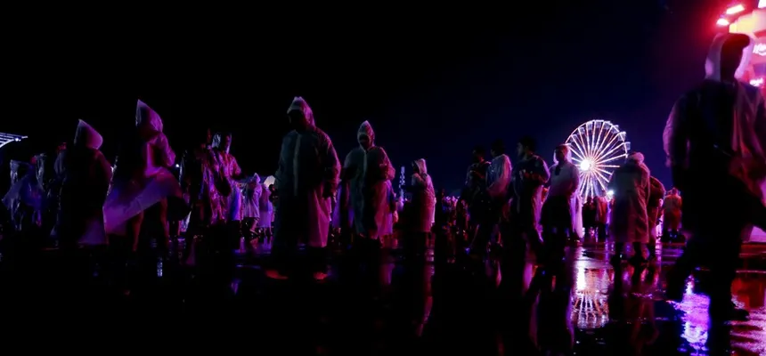

Rock in Rio fecha programação com estrelas do Rock, Pop e K-Pop
A organização do festival confirma datas, distribuição dos palcos e guia completo de venda de ingressos para a Cidade do Rock.

O Rock in Rio confirmou a grade final de atrações para a próxima edição na capital fluminense. Combinando clássicos do rock internacional com as maiores potências do pop moderno e do K-pop, a Cidade do Rock promete receber centenas de milhares de pessoas por dia.
Entre os nomes confirmados para o Palco Mundo destacam-se Foo Fighters, Maroon 5, Elton John, Calvin Harris e o grupo de K-pop Stray Kids. O Palco Sunset trará encontros inéditos da MPB com o rap nacional e colaborações internacionais exclusivas.
Além das atrações musicais, o festival traz inovações em sustentabilidade, acesso via BRT/Metrô integrados 24h e um sistema de pulseiras sem contato para otimizar filas e alimentação dentro da área do evento.
Voltar para Entretenimento